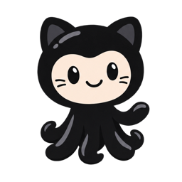
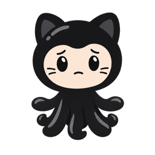

Idle

4.4 s blink loop. Idle alone makes no all-clear claim.
Attention

1.9 s wave, once for a verified new actionable item.
Urgent

1.9 s concerned gesture. No flashing or alarm loop.
Original companion pack and native macOS specifications. All inbox content below is invented demo data. This page is a design artifact, not the native app.

4.4 s blink loop. Idle alone makes no all-clear claim.
1.9 s wave, once for a verified new actionable item.

1.9 s concerned gesture. No flashing or alarm loop.
System Reduce Motion keeps all previews static.
Privacy is on · details hidden
Verified failure · repository hidden
Action for you · repository hidden
Last checked 12 minutes ago · count unknown
Some sources unavailable.
Click to open inbox.
Last known data may be out of date.
Open inboxUse native semantic colors. Offer a contrast backing when the black silhouette needs it.
Quality has words and shape cues. Unknown never displays 0. No official GitHub logo is used for the menu-bar identity.